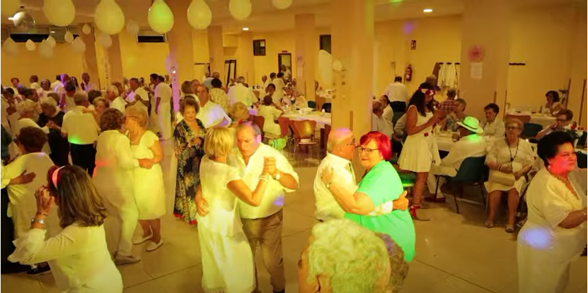

La historia de este bar se inaguró en el año 1978 en el que han pasado varios dueños por el bar con una directiva que propone una serie actividades,en las cuales la gente se puede apuntar de manera gratuita,y hay algunas que son de pago como pueden ser viajes dias especiales,o festividades que se celebran dentro de dicho bar, actualemnte el bar cuenta on mas de 400 socios los cuales van desde la mínima edad de 55 años hacia delante,es un bar pensado para jubilados.
